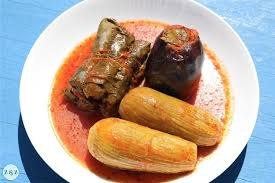
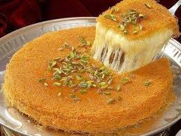

Suriye Mutfağı
Binlerce yıllık medeniyetlerin harmanlandığı eşsiz lezzetler

Kibbeh
İnce bulgur kabuğu içinde baharatlı kıyma ile hazırlanan geleneksel bir yemek.
Halep
Fatteh
Nohut, yoğurt ve kızarmış ekmekle hazırlanan geleneksel bir Suriye yemeği.
Şam

Mahashi
Çeşitli sebzelerin pirinç ve etle doldurularak pişirildiği bir yemek.
Tüm Suriye

Künefe
İnce tel kadayıf, peynir ve şerbetle hazırlanan meşhur bir tatlı.
Humus